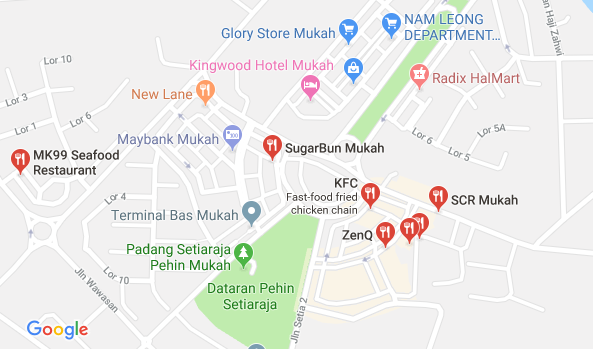

Location & Hours
The Blue Leopard is located near the riverfront at 9 Leopard Avenue, across from Fulcher Bridge. Walking distance from Berry Park and Central Station. Most guests prefer to get off on Central Station on the Green Line and walk two blocks west until they reach Leopard Avenue. Limited parking is available around back.
Hours
- Monday 10am-2am
- Tuesday 10am-2am
- Wednesday 10am-2am
- Thursday 10am-2am
- Friday 10am-4am
- Saturday 10am-4am
- Sunday 10am-4am
Special Notice
We will be closed 10.24–10.30 for renovations.
